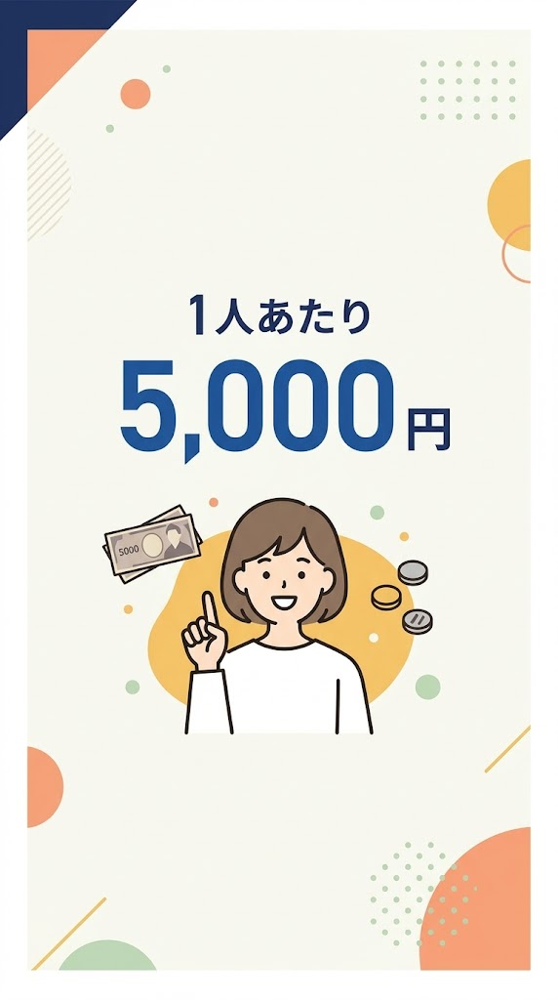
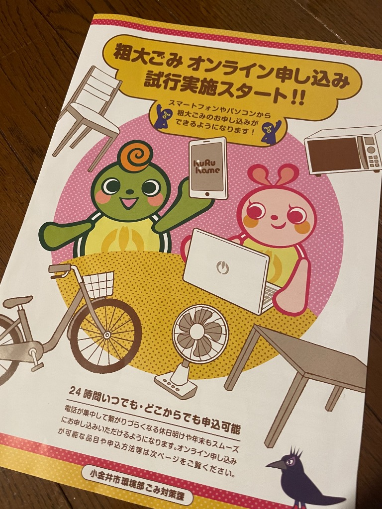
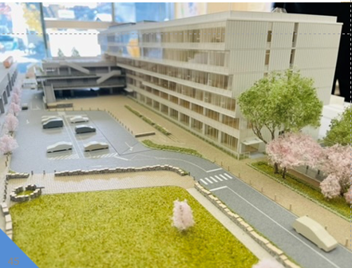
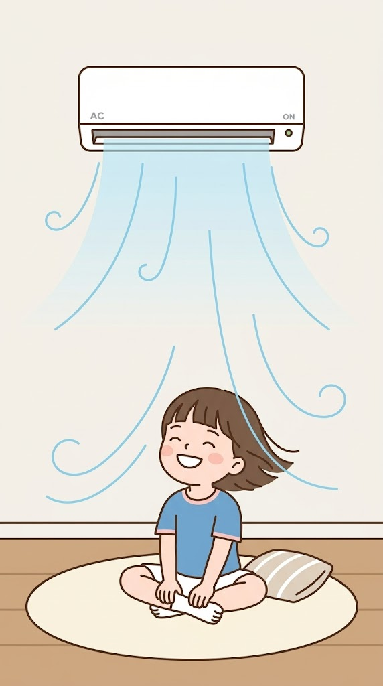
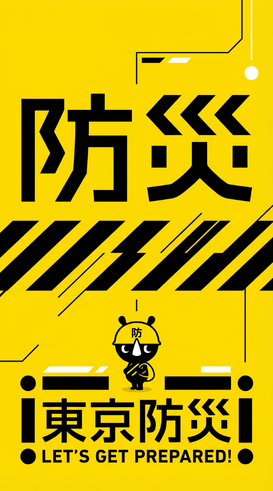

ダミーテキスト
市民一人当たり現金5,000円を支給！
令和8年2月5日に開催した第1回臨時会において可決。国の臨時交付金に市の一般財源を上乗せし、市民一人当たり5,000円の現金給付。手続きが必要な世帯へは、4月1日から案内文が郵送されます。

ダミーテキスト
粗大ごみのオンライン申し込みスタート
スマートフォンやパソコンから粗大ごみの申し込みができます。現段階では申し込み可能な品目が限られていますので、詳しくは市のホームページをご確認ください。

ダミーテキスト
新庁舎等建設
2度の入札不調を受け、市は対応を検討していましたが、現設計での3度目の入札に向けて令和8年度は準備を行うと発表。令和10年度（早ければ9年度）の入札をめざすとしています。

ダミーテキスト
小学校普通教室用エアコン更新事業
平成23年度（2011年）に設置されたエアコンですが、耐用年数の目安である15年が経過し、大規模故障のリスクが高まっていることか順次更新が進められます。今年度の予算概算は、2,201万円で、債務負担行為として3億5,542万円（R9～R18年度）です。

ダミーテキスト
防災担当部長をあらたに配置
市の災害への備えと災害への対応力を高めるために、あらたに「防災安全担当部長」が配置されました。災害時の初動を確実なものとし、対策本部の機能をさらに高めるための施策です。



第1回定例会
予算組替動議が可決。市長がそれに則した対応を表明約束し、
予算組替動議が可決。市長がそれに則した対応を表明約束し、
市長提案の議案はすべて可決。
❓ クイズ：ここはどこの公園でしょう。
そしてこれはなんでしょう。
そしてこれはなんでしょう。